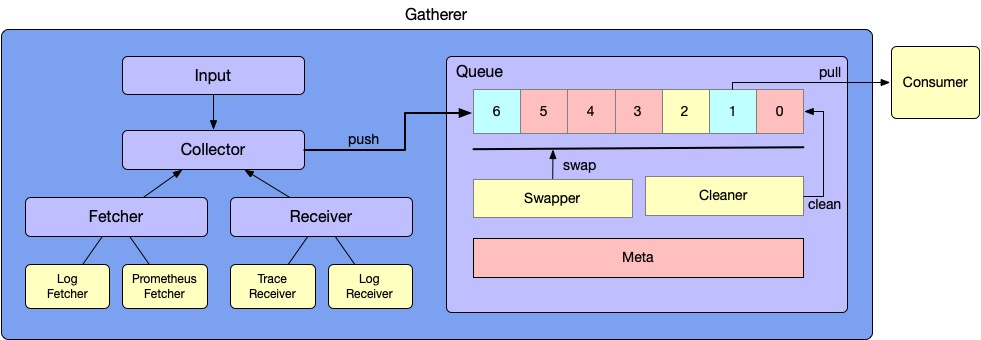
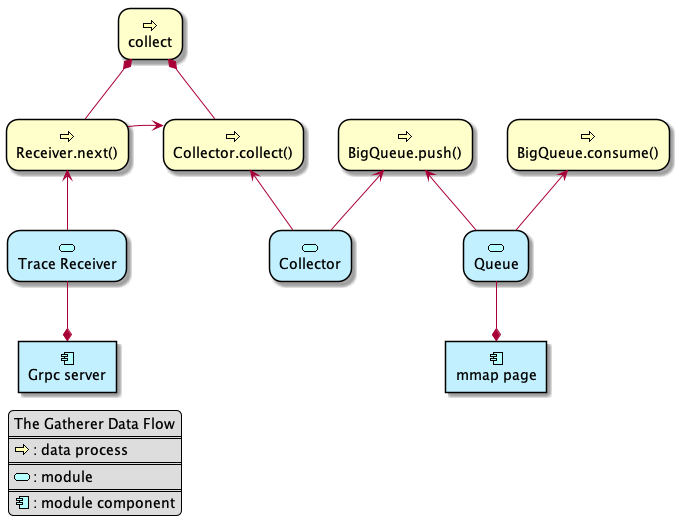
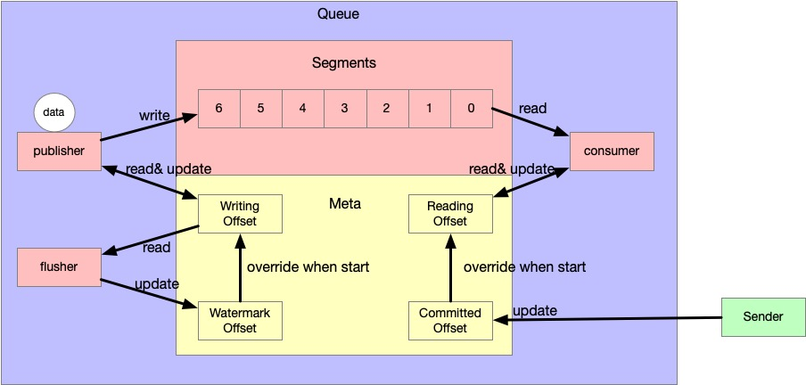
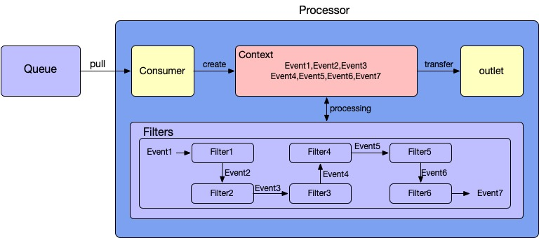

The first design of Satellite 0.1.0

- Author: Jiapeng Liu. Baidu.
- skywalking-satellite: The Sidecar Project of Apache SkyWalking
- Nov. 25th, 2020
A lightweight collector/sidecar which can be deployed close to the target monitored system, to collect metrics, traces, and logs. It also provides advanced features, such as local cache, format transformation, and sampling.
Design Thinking
Satellite is a 2 level system to collect observability data from other core systems. So, the core element of the design is to guarantee data stability during Pod startup all the way to Pod shutdown avoiding alarm loss. All modules are designed as plugins, and if you have other ideas, you can add them yourself.
SLO
- Single gatherer supports > 1000 ops (Based 0.5 Core,50M)
- At least once delivery.(Optional)
- Data stability: 99.999%.(Optional)
Because they are influenced by the choice of plugins, some items in SLO are optional.
Role
Satellite would be running as a Sidecar. Although Daemonset mode would take up fewer resources, it will cause more troubles to the forwarding of agents. So we also want to use Sidecar mode by reducing the costs. But Daemonset mode would be also supported in the future plan.
Core Modules
The Satellite has 3 core modules which are Gatherer, Processor, and Sender.
- The Gatherer module is responsible for fetching or receiving data and pushing the data to Queue.
- The Processor module is responsible for reading data from the queue and processing data by a series of filter chains.
- The Sender module is responsible for async processing and forwarding the data to the external services in the batch mode. After sending success, Sender would also acknowledge the offset of Queue in Gatherer.

Detailed Structure
The overall design is shown in detail in the figure below. We will explain the specific components one by one.

Gatherer
Concepts
The Gatherer has 4 components to support the data collection, which are Input, Collector, Worker, and Queue. There are 2 roles in the Worker, which are Fetcher and Receiver.
- The Input is an abstraction of the input source, which is usually mapped to a configuration file.
- The Collector is created by the Source, but many collectors could be created by the same Source. For example, when a log path has been configured as the /var/*.log in an Input, the number of collectors is the same as the file number in this path.
- The Fetcher and Receiver is the real worker to collect data. The receiver interface is an abstraction, which has multiple implementations, such as gRPC receiver and HTTP receiver.Here are some specific use cases:
- Trace Receiver is a gRPC server for receiving trace data created by Skywalking agents.
- Log Receiver is also a gRPC server for receiving log data which is collected by Skywalking agents. (In the future we want Skywalking Agent to support log sending, and RPC-based log sending is more efficient and needs fewer resources than file reading. For example, the way of file reading will bring IO pressure and performance cost under multi-line splicing.)
- Log Fetcher is like Filebeat, which fits the common log collection scenario. This fetcher will have more responsibility than any other workers because it needs to record the offset and process the multi-line splicing. This feature will be implemented in the future.
- Prometheus Fetcher supports a new way to fetch Prometheus data and push the data to the upstream.
- ……
- The Queue is a buffer module to decouple collection and transmission. In the 1st release version, we will use persistent storage to ensure data stability. But the implementation is a plug-in design that can support pure memory queues later. 
The data flow
We use the Trace Receiver as an example to introduce the data flow. 
Queue
MmapQueue
We have simplified the design of MmapQueue to reduce the resources cost on the memory and disk.
Concepts
There are 2 core concepts in MmapQueue.
- Segment: Segment is the real data store center, that provides large-space storage and does not reduce read and write performance as much as possible by using mmap. And we will avoid deleting files by reusing them.
- Meta: The purpose of meta is to find the data that the consumer needs.
Segment
One MmapQueue has a directory to store the whole data. The Queue directory is made up with many segments and 1 meta file. The number of the segments would be computed by 2 params, which are the max cost of the Queue and the cost of each segment. For example, If the max cost is 512M and each segment cost is 256K, the directory can hold up to 2000 files. Once capacity is exceeded, an coverage policy is adopted that means the 2000th would override the first file.
Each segment in Queue will be N times the size of the page cache and will be read and written in an appended sequence rather than randomly. These would improve the performance of Queue. For example, each Segment is a 128k file, as shown in the figure below.

Meta
The Meta is a mmap file that only contains 56Bit. There are 5 concepts in the Meta.
- Version: A version flag.
- Watermark Offset: Point to the current writing space.
- ID: SegmentID
- Offset: The offset in Segment.
- Writed Offset: Point to the latest refreshed data, that would be overridden by the write offset after period refresh.
- ID: SegmentID
- Offset: The offset in Segment.
- Reading Offset: Point to the current reading space.
- ID: SegmentID
- Offset: The offset in Segment.
- Committed Offset: Point to the latest committed offset , that is equal to the latest acked offset plus one.
- ID: SegmentID
- Offset: The offset in Segment.

The following diagram illustrates the transformation process.
- The publisher receives data and wants to write to Queue.
- The publisher would read Writing Offset to find a space and do plus one.
- After this, the publisher will write the data to the space.
- The consumer wants to read the data from Queue.
- The consumer would read Reading Offset to find the current read offset and do plus one.
- After this, the consumer will read the data from the space.
- On period flush, the flusher would override Watermark Offset by using Writing Offset.
- When the ack operation is triggered, Committed Offset would plus the batch size in the ack batch.
- When facing crash, Writing Offset and Reading Offset would be overridden by Watermark Offset and Committed Offset. That is because the Reading Offset and Writing Offset cannot guarantee at least once delivery.

Mmap Performance Test
The test is to verify the efficiency of mmap in low memory cost.
- The rate of data generation: 7.5K/item 1043 item/s (Based on Aifanfan online pod.)
- The test structure is based on Bigqueue because of similar structure.
- Test tool: Go Benchmark Test
- Command: go test -bench BenchmarkEnqueue -run=none -cpu=1
- Result On Mac(15-inch, 2018,16 GB 2400 MHz DDR4, 2.2 GHz Intel Core i7 SSD):
- BenchmarkEnqueue/ArenaSize-128KB/MessageSize-8KB/MaxMem-384KB 66501 21606 ns/op 68 B/op 1 allocs/op
- BenchmarkEnqueue/ArenaSize-128KB/MessageSize-8KB/MaxMem-1.25MB 72348 16649 ns/op 67 B/op 1 allocs/op
- BenchmarkEnqueue/ArenaSize-128KB/MessageSize-16KB/MaxMem-1.25MB 39996 33199 ns/op 103 B/op 1 allocs/op
- Result On Linux(INTEL Xeon E5-2450 V2 8C 2.5GHZ2,INVENTEC PC3L-10600 16G8,INVENTEC SATA 4T 7.2K*8):
- BenchmarkEnqueue/ArenaSize-128KB/MessageSize-8KB/MaxMem-384KB 126662 12070 ns/op 62 B/op 1 allocs/op
- BenchmarkEnqueue/ArenaSize-128KB/MessageSize-8KB/MaxMem-1.25MB 127393 12097 ns/op 62 B/op 1 allocs/op
- BenchmarkEnqueue/ArenaSize-128KB/MessageSize-16KB/MaxMem-1.25MB 63292 23806 ns/op 92 B/op 1 allocs/op
- Conclusion: Based on the above tests, mmap is both satisfied at the write speed and at little memory with very low consumption when running as a sidecar.
Processor
The Processor has 3 core components, which are Consumer, Filter, and Context.
- The Consumer is created by the downstream Queue. The consumer has its own read offset and committed offset, which is similar to the offset concept of Spark Streaming.
- Due to the particularity of APM data preprocessing, Context is a unique concept in the Satellite filter chain, which supports storing the intermediate event because the intermediate state event also needs to be sent in sometimes.
- The Filter is the core data processing part, which is similar to the processor of beats. Due to the context, the upstream/downstream filters would be logically coupling.

Sender
- BatchConverter decouples the Processor and Sender by staging the Buffer structure, providing parallelization. But if BatchBuffer is full, the downstream processors would be blocked.
- Follower is a real send worker that has a client, such as a gRPC client or Kafka client, and a fallback strategy. Fallback strategy is an interface, we can add more strategies to resolve the abnormal conditions, such as Instability in the network, upgrade the oap cluster.
- When sent success, Committed Offset in Queue would plus the number of this batch.

High Performance
The scenario using Satellite is to collect a lot of APM data collection. We guarantee high performance by the following ways.
- Shorten transmission path, that means only join 2 components,which are Queue and Processor, between receiving and forwarding.
- High Performance Queue. MmapQueue provides a big, fast and persistent queue based on memory mapped file and ring structure.
- Processor maintains a linear design, that could be functional processed in one go-routine to avoid too much goroutines switching.
Stability
Stability is a core point in Satellite. Stability can be considered in many ways, such as stable resources cost, stable running and crash recovery.
Stable resource cost
In terms of resource cost, Memory and CPU should be a concern.
In the aspect of the CPU, we keep a sequence structure to avoid a large number of retries occurring when facing network congestion. And Satellite avoids keep pulling when the Queue is empty based on the offset design of Queue.
In the aspect of the Memory, we have guaranteed only one data caching in Satellite, that is Queue. For the queue structure, we also keep the size fixed based on the ring structure to maintain stable Memory cost. Also, MmapQueue is designed for minimizing memory consumption and providing persistence while keeping speed as fast as possible. Maybe supports some strategy to dynamically control the size of MmapQueue to process more extreme conditions in the future.
Stable running
There are many cases of network congestion, such as the network problem on the host node, OAP cluster is under upgrating, and Kafka cluster is unstable. When facing the above cases, Follower would process fallback strategy and block the downstream processes. Once the failure strategy is finished, such that send success or give up this batch, the Follower would process the next batch.
Crash Recovery
The crash recovery only works when the user selects MmapQueue in Gatherer because of persistent file system design. When facing a crash, Reading Offset would be overridden by Committed Offset that ensure the at least once delivery. And Writed Offset would override Writing Offset that ensures the consumer always works properly and avoid encountering uncrossable defective data blocks.
Buffer pool
The Queue is to store fixed structure objects, object buffer pool would be efficient to reuse memory to avoid GC.
- ackChan
- batch convertor
Some metrics
In Satellite, we should also collect its own monitoring metrics. The following metrics are necessary for Satellite.
- cpu
- memory
- go routine number
- gatherer_writing_offset
- gatherer_watermark_offset
- processor_reading_count
- sender_committed_offset
- sender_abandoned_count
- sender_retry_count
Input and Output
We will reuse this diagram to explain the input and output.
- Input
- Because the push-pull mode is both supported, Queue is a core component.
- Queue is designed to be a ring-shaped fixed capacity, that means the oldest data would be overridden by the latest data. If users find data loss, users should raise the ceiling of memory Queue. MmapQueue generally doesn’t face this problem unless the Sender transport is congested.
- Ouput
- If the BatchBuffer is full, the processor would be blocked.
- If the Channel is full, the downstream components would be blocked, such as BatchConvertor and Processor.
- When SenderWorker sends failure, the batch data would do a failure strategy that would block pulling data from the Channel. The strategy is a part of Sender,the operation mode is synchronous.
- Once the failure strategy is finished, such that send success or give up this batch, the Sendworker would keep pulling data from the Channel.
Questions
How to avoid keep pulling when the Queue is empty?
If Watermark Offset is less than or equal to Reading Offset, a signal would be sent to the consumer to avoid keep pulling.
Why reusing files in Queue?
The unified model is a ring in Queue, that limits fixed resources cost in memory or disk.In Mmap Queue, reusing files turns the delete operations into an overwrite operations, effectively reducing the creation and deletion behavior in files.
What are the strategies for file creation and deletion in MmapQueue?
As Satellite running, the number of the files in MmapQueue would keep growing until up to the maximum capacity. After this, the old files will be overridden by the new data to avoid file deletion. When the Pod died, all resources were recycled.